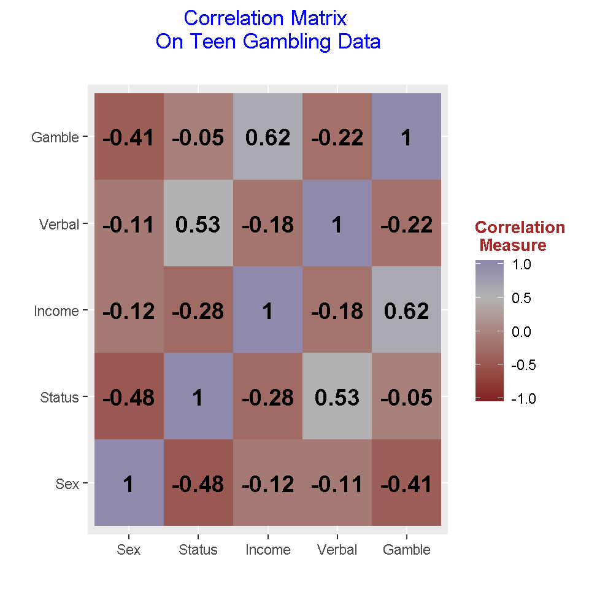

Hi there. Here is some work on correlation plots in R I have worked on. Most of my findings have been through trial and error with some references.
Before looking at the data, I first load the faraway and corrplot packages into R. (The faraway package is a dataset package.)
# Correlation Plot
# Reference:
# http://www.sthda.com/english/wiki/ggplot2-quick-correlation-matrix-heatmap-r-software-and-data-visualization
library(faraway)
library(corrplot)## Warning: package 'corrplot' was built under R version 3.4.4## corrplot 0.84 loaded
From the faraway package, there is a dataset called teengamb. This dataset is about teen gambling and more information on this dataset can be found by typing in ?teengamb. I save this teengamb data into a new variable (copy) called gamb_data.
gamb_data <- teengamb
Using the head() and tail() functions, I can preview the data by looking at the first 6 rows and the last 6 rows of the data.
# Preview data:
head(gamb_data)## sex status income verbal gamble
## 1 1 51 2.00 8 0.0
## 2 1 28 2.50 8 0.0
## 3 1 37 2.00 6 0.0
## 4 1 28 7.00 4 7.3
## 5 1 65 2.00 8 19.6
## 6 1 61 3.47 6 0.1tail(gamb_data)## sex status income verbal gamble
## 42 0 61 15.00 9 69.7
## 43 0 75 3.00 8 13.3
## 44 0 66 3.25 9 0.6
## 45 0 62 4.94 6 38.0
## 46 0 71 1.50 7 14.4
## 47 0 71 2.50 9 19.2
One could further examine the data by using the summary() and str() functions.
# Check summary and data structure:
summary(gamb_data)## sex status income verbal
## Min. :0.0000 Min. :18.00 Min. : 0.600 Min. : 1.00
## 1st Qu.:0.0000 1st Qu.:28.00 1st Qu.: 2.000 1st Qu.: 6.00
## Median :0.0000 Median :43.00 Median : 3.250 Median : 7.00
## Mean :0.4043 Mean :45.23 Mean : 4.642 Mean : 6.66
## 3rd Qu.:1.0000 3rd Qu.:61.50 3rd Qu.: 6.210 3rd Qu.: 8.00
## Max. :1.0000 Max. :75.00 Max. :15.000 Max. :10.00
## gamble
## Min. : 0.0
## 1st Qu.: 1.1
## Median : 6.0
## Mean : 19.3
## 3rd Qu.: 19.4
## Max. :156.0str(gamb_data)## 'data.frame': 47 obs. of 5 variables:
## $ sex : int 1 1 1 1 1 1 1 1 1 1 ...
## $ status: int 51 28 37 28 65 61 28 27 43 18 ...
## $ income: num 2 2.5 2 7 2 3.47 5.5 6.42 2 6 ...
## $ verbal: int 8 8 6 4 8 6 7 5 6 7 ...
## $ gamble: num 0 0 0 7.3 19.6 0.1 1.45 6.6 1.7 0.1 ...
The column names could be fixed by capitalizing them. This can be done by using the colnames() function in R.
# Fixing column names:
colnames(gamb_data) <- c("Sex", "Status", "Income", "Verbal", "Gamble")
In base R, a correlation table can be created by using the cor() function.
# Correlation
corr_gamb <- cor(gamb_data)
corr_gamb## Sex Status Income Verbal Gamble
## Sex 1.0000000 -0.48093526 -0.1154586 -0.1069762 -0.40780533
## Status -0.4809353 1.00000000 -0.2750340 0.5316102 -0.05042081
## Income -0.1154586 -0.27503402 1.0000000 -0.1755707 0.62207690
## Verbal -0.1069762 0.53161022 -0.1755707 1.0000000 -0.22005619
## Gamble -0.4078053 -0.05042081 0.6220769 -0.2200562 1.00000000
In a correlation matrix, the numeric entries along the main diagonal from top left to bottom right are ones. One could show (by hand) that the correlation of two identical random variables is one. (I.e. Correlation of status and status is one).
Notice that the correlation matrix is a symmetric matrix. The transpose of a symmetric matrix is the same matrix as before. As an example, the correlation of status and income (row 2, column 3) is -0.2750340 which is the same as the correlation of income and status (row 3, column 2) which is also -0.2750340.
This section will deal with creating correlation table plots using the corrplot package. Making simple correlation plots using corrplot is not very difficult.
At the end of the previous section, the correlation table is saved into a variable called corr_gamb. This corr_gamb variable is needed into the corrplot() function in the corrplot package.
I present five different correlation plots which I have come with in R. Other variations do exist as you can change the arguments in terms of titles, fonts, colours and so on. (The title is somewhat messed up and the image that produces is too zoomed in. I would have to look into it for a fix.)
# Corrplot correlation plot:
# tl.col = text label colour, tl.srt = string rotation for text
# tl.cex = size of text label, bg = background colour
# method = "shade" for coloured squares
# type = "full" for full matrix
# Version One:
corrplot(corr_gamb, tl.col = "brown", tl.srt = 30, bg = "White",
title = "\n\n Correlation Plot Of Gambling Data",
type = "full")
The plot looks okay but it could use labels. Also, it is not necessary to show the full matrix. Since the correlation matrix is symmetric, the lower or upper triangular form of the full matrix is enough.
The second version is a lower triangular version of the correlation matrix.
# Version Two (Lower Triangular Of Correlation Matrix):
corrplot(corr_gamb, tl.col = "red", tl.srt = 45, bg = "White",
title = "\n\n Correlation Plot Of Gambling Data",
type = "lower")
Labels are added in version three.
# Version Three (Added Labels):
corrplot(corr_gamb, tl.col = "red", bg = "White", tl.srt = 35,
title = "\n\n Correlation Plot Of Gambling Data \n",
addCoef.col = "black", type = "full")
Adding labels does help in assessing correlation strengths with variable pairs. Version four shows how to change the colours.
# Version Four (Change colour pallete with HTML colour codes):
colour_set <- colorRampPalette(colors = c("#f4ff4d", "#c7d123", "#acb515", "#81890b", "#656c06"))
corrplot(corr_gamb, tl.col = "blue", bg = "White", tl.srt = 35,
title = "\n\n Correlation Plot Of Gambling Data \n",
addCoef.col = "black", type = "lower",
col = colour_set(100))
In version five, I change the background colour from white to gray.
# Version Five (Different Colours):
colour_set <- colorRampPalette(colors = c("#f4ff4d", "#c7d123", "#acb515", "#81890b", "#656c06"))
corrplot(corr_gamb, tl.col = "blue", bg = "gray", tl.srt = 35,
title = "\n\n Correlation Plot Of Gambling Data \n",
addCoef.col = "black", type = "lower",
col = colour_set(100))
The ggplot2 package is a very good package in terms of utility for data visualization in R. Plotting correlation plots in R using ggplot2 takes a bit more work than with corrplot. The results though are worth it. To prepare the data for plotting, the reshape2() package with the melt function is used.
Load the ggplot2() and reshape2() packages first.
# Correlation plots using ggplot2:
library(ggplot2)
library(reshape2)
The melt function is used to break up the correlation table into a long format table. This table will consist of 25 rows (5 variables times 5 variables) with three columns. The first two columns consist of variable pairs and the third column will the contain the correlation measures for the variable pairs.
# Use the melt function to melt corr_gamb (or undo the table):
melted_gamb <- melt(corr_gamb)
head(melted_gamb)## Var1 Var2 value
## 1 Sex Sex 1.0000000
## 2 Status Sex -0.4809353
## 3 Income Sex -0.1154586
## 4 Verbal Sex -0.1069762
## 5 Gamble Sex -0.4078053
## 6 Sex Status -0.4809353tail(melted_gamb)## Var1 Var2 value
## 20 Gamble Verbal -0.22005619
## 21 Sex Gamble -0.40780533
## 22 Status Gamble -0.05042081
## 23 Income Gamble 0.62207690
## 24 Verbal Gamble -0.22005619
## 25 Gamble Gamble 1.00000000
# A Full Correlation Plot Using ggplot2
## Version One: Correlation Plot using ggplot2:
ggplot(data = melted_gamb, aes(x = Var1, y = Var2, fill = value)) +
geom_tile() +
scale_fill_gradient2(midpoint = 0.5, mid ="grey70",
limits = c(-1, +1)) +
labs(title = "Correlation Matrix \n On Teen Gambling Data \n",
x = "", y = "", fill = "Correlation \n Measure") +
theme(plot.title = element_text(hjust = 0.5, colour = "blue"),
axis.title.x = element_text(face="bold", colour="darkgreen", size = 12),
axis.title.y = element_text(face="bold", colour="darkgreen", size = 12),
legend.title = element_text(face="bold", colour="brown", size = 10)) +
geom_text(aes(x = Var1, y = Var2, label = round(value, 2)), color = "black",
fontface = "bold", size = 5)
In this table, red tiles represent negative correlations between the two associated variables and the blue tiles represent positive correlations between two variables. The correlations along the main diagonal are ones.
Version Two: Upper Triangular Correlation Plot using ggplot2
The full correlation matrix provides more than enough information. An upper triangular matrix of the correlation matrix provides less cluster and there is no loss of information. (Recall that the correlation matrix is a symmetric matrix so we can afford to drop the multiple entries.)
For upper and lower triangular matrices, there is some additional data manipulation work needed to have the data prepared for plotting.
# Create new copy:
upper_gamb <- corr_gamb
# Make upper triangular matrix by setting NA to lower triangular part:
upper_gamb[lower.tri(upper_gamb)] <- NA
upper_gamb## Sex Status Income Verbal Gamble
## Sex 1 -0.4809353 -0.1154586 -0.1069762 -0.40780533
## Status NA 1.0000000 -0.2750340 0.5316102 -0.05042081
## Income NA NA 1.0000000 -0.1755707 0.62207690
## Verbal NA NA NA 1.0000000 -0.22005619
## Gamble NA NA NA NA 1.00000000
# Melt this upper triangular matrix and remove NA values:
up_m_gamb <- melt(upper_gamb, na.rm = TRUE)
head(up_m_gamb)## Var1 Var2 value
## 1 Sex Sex 1.0000000
## 6 Sex Status -0.4809353
## 7 Status Status 1.0000000
## 11 Sex Income -0.1154586
## 12 Status Income -0.2750340
## 13 Income Income 1.0000000tail(up_m_gamb)## Var1 Var2 value
## 19 Verbal Verbal 1.00000000
## 21 Sex Gamble -0.40780533
## 22 Status Gamble -0.05042081
## 23 Income Gamble 0.62207690
## 24 Verbal Gamble -0.22005619
## 25 Gamble Gamble 1.00000000# Ggplot upper triangular correlation matrix:
ggplot(data = up_m_gamb, aes(x = Var1, y = Var2, fill = value)) +
geom_tile() +
scale_fill_gradient2(midpoint = 0.5, mid ="grey70", limits = c(-1, +1)) +
labs(title = "Correlation Matrix \n On Teen Gambling Data \n",
x = "", y = "", fill = "Correlation \n Measure") +
theme(plot.title = element_text(hjust = 0.5, colour = "blue"),
axis.title.x = element_text(face="bold", colour="darkgreen", size = 12),
axis.title.y = element_text(face="bold", colour="darkgreen", size = 12),
legend.title = element_text(face="bold", colour="brown", size = 10)) +
geom_text(aes(x = Var1, y = Var2, label = round(value, 2)), color = "black",
fontface = "bold", size = 5)
Having a upper triangular matrix version of the correlation matrix is less intimidating and it is easier to read. You may have to explain that for example that the correlation of income and status and the correlation of status and income are the same (due to symmetry).
(This upper triangular matrix form is not exactly like the one from linear algebra but I think the above image is good enough for displaying purposes.)
Version Three: Lower Triangular Correlation Plot using ggplot2
Here is the code and output for the lower triangular part of the correlation matrix. The code is similar to the upper triangular case.
## Version Three: Lower Triangular Correlation Plot using ggplot2:
# Create new copy:
lower_gamb <- corr_gamb
# Make lower triangular matrix by setting NA to upper triangular part:
lower_gamb[upper.tri(lower_gamb)] <- NA
lower_gamb## Sex Status Income Verbal Gamble
## Sex 1.0000000 NA NA NA NA
## Status -0.4809353 1.00000000 NA NA NA
## Income -0.1154586 -0.27503402 1.0000000 NA NA
## Verbal -0.1069762 0.53161022 -0.1755707 1.0000000 NA
## Gamble -0.4078053 -0.05042081 0.6220769 -0.2200562 1# Melt this upper triangular matrix and remove NA values:
lower_m_gamb <- melt(lower_gamb, na.rm = TRUE)
head(lower_m_gamb)## Var1 Var2 value
## 1 Sex Sex 1.0000000
## 2 Status Sex -0.4809353
## 3 Income Sex -0.1154586
## 4 Verbal Sex -0.1069762
## 5 Gamble Sex -0.4078053
## 7 Status Status 1.0000000tail(lower_m_gamb)## Var1 Var2 value
## 13 Income Income 1.0000000
## 14 Verbal Income -0.1755707
## 15 Gamble Income 0.6220769
## 19 Verbal Verbal 1.0000000
## 20 Gamble Verbal -0.2200562
## 25 Gamble Gamble 1.0000000# Ggplot lower triangular correlation matrix:
ggplot(data = lower_m_gamb, aes(x = Var1, y = Var2, fill = value)) +
geom_tile() +
scale_fill_gradient2(midpoint = 0.5, mid ="grey70",
limits = c(-1, +1)) +
labs(title = "Correlation Matrix \n On Teen Gambling Data \n",
x = "", y = "", fill = "Correlation \n Measure") +
theme(plot.title = element_text(hjust = 0.5, colour = "blue"),
axis.title.x = element_text(face="bold", colour="darkgreen", size = 12),
axis.title.y = element_text(face="bold", colour="darkgreen", size = 12),
legend.title = element_text(face="bold", colour="brown", size = 10)) +
geom_text(aes(x = Var1, y = Var2, label = round(value, 2)), color = "black",
fontface = "bold", size = 5)
R Graphics Cookbook by Winston Chang (2012)